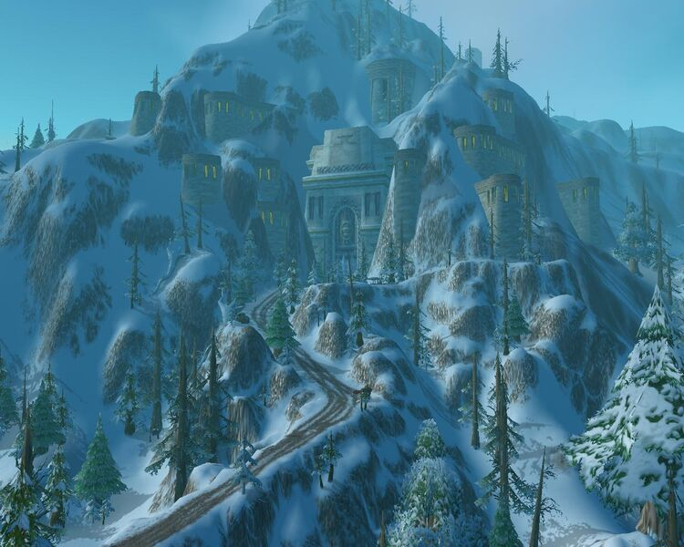

Forjaz
La ciudad capital de los enanos de la alianza en World of Wacraft es la ciudad Forjaz, liderada bajo el consejo de los tres martillos (Muradin Barbabronce, Moira Thaurissan, Falsad Martillosalvaje) es uno de los baluartes de la alianza de Azeroth.
Historia
La ciudad fue construida 800 años después de la implosión del Pozo de la Eternidad por
los primeros enanos de carne que despertaron en Uldaman. Excavada en el corazón de las montañas
de Khaz Modan, se trata de un profundo subterráneo hogar de exploradores, mineros y guerreros.
Sus enormes puertas de piedra protegen la ciudad en tiempos de guerra, y la lava de la montaña es
redirigida y distribuida para calefacción, energía y propósitos de herrería.
La paz entre los enanos perduró al pasar de los siglos hasta la muerte del rey Modimos Yunquemar,
tras no dejar heredero al trono, se generó gran tensión entre los tres grandes clanes de enanos:
los Barbabronce, los Martillosalvaje y los Hierronegro. La batalla dentro de Forjaz terminó con la
victoria de los Barbabronce y la expulsión de los otros clanes, de los cuales los Martillo salvaje
se desplazaron hasta el noroeste de Khaz Modan y los Hierro negro al sur del mismo reino.
La guerra continuó fuera del país de Dun Morogh, constantes conflictos principalmente entre el clan Hierronegro
con los Barbabronce y los Martillosalvaje. Lo que concluiría con la última batalla en Grim Batol
(la ciudad de los Martillosalvaje) en donde se desataría una maldición que dejaría esa ciudad inhabitable.
Al mismo tiempo, y también catalizador de una "paz" momentánea entre los clanes, en el sur, en la ciudad
del clan Hierronegro "Forjatiniebla", en la realización de conjuros para la batalla, liberarían al señor elemental
Ragnaros, lo que desencadenaría la destrucción de gran parte del sur del reino de Khaz Modan.
Ver más.
Información
| Ubicación: | Khaz Modan |
| Afiliación: |
|
| Num. Habitantes: | 20000 |
| Idioma: | Enánico, Gnomo, Común |
| Líderes: |
|